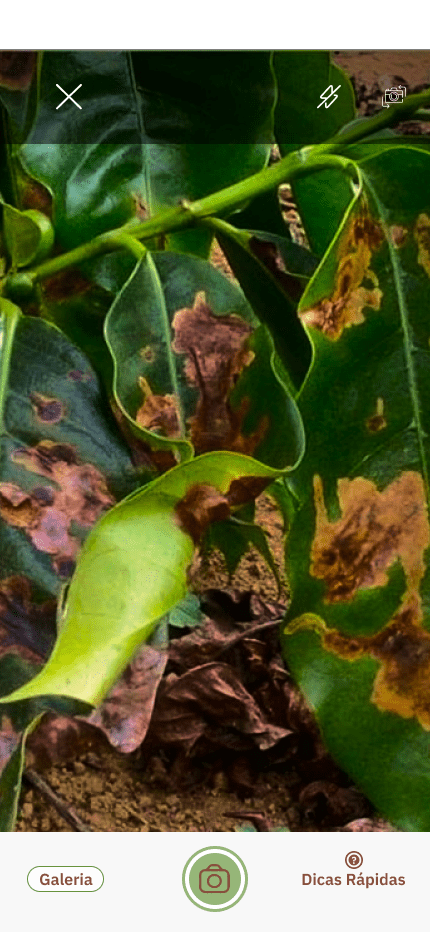

Scan Coffee
O objetivo deste projeto e que o cafeicultor possa analisar as folhas de café com o auxílio da IA, e possa identificar a presença da infestação de forma rápida e eficiente, sem depender da presença de profissionais e de um laboratório, otimizando o tempo de diagnóstico e assim poder iniciar um tratamento preventivo contra a infestação.
Tela Home

Tela de Escaneio
Tela de Resultado

Tela de Historico


Geolocalização é uma forma de localizar pessoas ou objetos por meio da tecnologia.
Ela se baseia em coordenadas geográficas (latitude e longitude), que são detectadas por satélites e então enviadas para o celular, tablet ou computador.

Inteligência Artificial (IA) é um ramo da ciência da computação que se concentra no desenvolvimento de sistemas e algoritmos capazes de realizar tarefas que normalmente exigem inteligência humana.
Essas tarefas incluem: Aprendizado; Raciocínio; Percepção; Compreensão e geração de linguagem natural; Reconhecimento de voz e imagem; Tomada de decisão; e Resolução de problemas complexos.
Computação em nuvem é o fornecimento de serviços de computação, incluindo servidores, armazenamento, bancos de dados, rede, software, análise e inteligência, pela Internet para oferecer inovações mais rápidas, recursos flexíveis e economias de escala.
Os recursos são disponibilizados conforme as necessidades dos usuários, de forma rápida e eficiente, ajudando a reduzir os custos operacionais.

A história da Go Dev é uma narrativa em evolução, uma jornada de descoberta e realização.

Com uma visão firme, uma equipe dedicada e um compromisso inabalável com a inovação, a empresa se torna mais do que apenas uma entidade comercial, se torna um catalisador de mudanças, um arquiteto do amanhã digital.

A Go Dev, com sua paixão e expertise, está preparada para desbravar novos horizontes e definir os padrões do que é possível no vasto e emocionante campo da transformação digital.